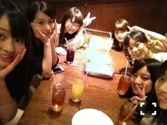

| 2013/05 13 Mon | 423回目*marika |
母の日。
お母さんいつもありがとう。
これからもよろしくね

一日早くお花をプレゼントしました。
渋めのカーネーション

......
東京公演千秋楽。
昼はいつみに立候補。
二幕に出ることは出来なかった。
悔しかったけど、
でもなにより楽しかったです。
夜は美咲子。
東京公演で3回演じた役で、
私にとって特別な役です。
選ばれなかったけど、
女中4を演じることができました。
千秋楽に二幕に出ることができて
本当に嬉しかったです！
千秋楽ということで
三幕のミニライブは
おいでシャンプーも歌ったよ♪
この10日間。
長かったようで短かったけど、
それまで本当に濃い日々を
過ごしてしました。
二幕で演じたのは
美咲子、北嶋、緋咲子の3役です。
観に来てくださったみなさん
あたたかい声援を
ありがとうございました。
この公演でたくさんの方が
観に来てくださいました。
バナナマン日村さん設楽さん、
スピードワゴン井戸田さん、
山下監督
ありがとうございました！
まゆゆさん、
なんと3回も...泣
ありがとうございました!
せっちゃん、ゆきな、れな、みなみ
来てくれてありがとう

ゆみ姉も来てくれたんだよー♪
ゆみこ！ゆみこ！
スタッフのみなさん、メンバー
お疲れ様でした。
ありがとうございました。
大阪でもよろしくお願いします！

ありがとう！赤坂ACTシアター！
次は大阪だあああ！
待ってろ大阪あああああ！

打ち上げにて
まりかとねねの顔が半分
切れちゃってるのはご了承ください←
まりか
コメント(351)
2013/05/13 00:18